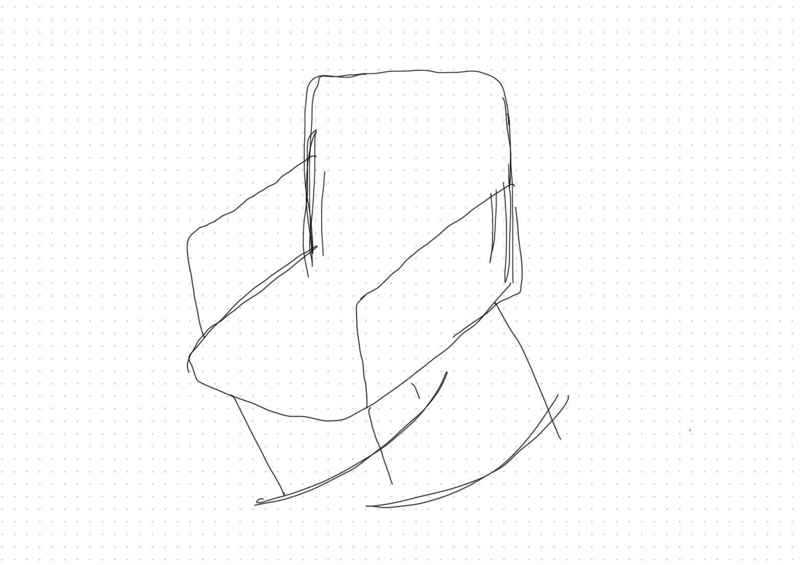
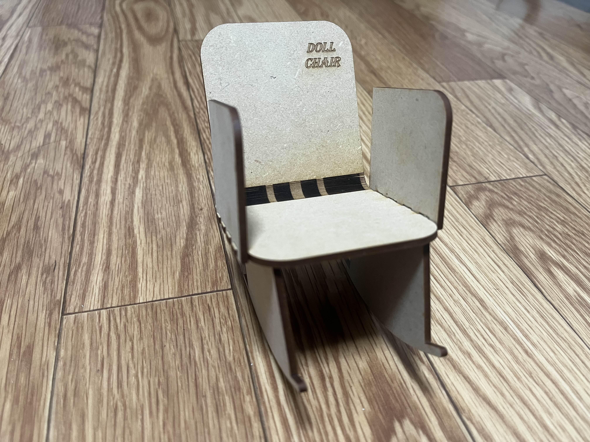
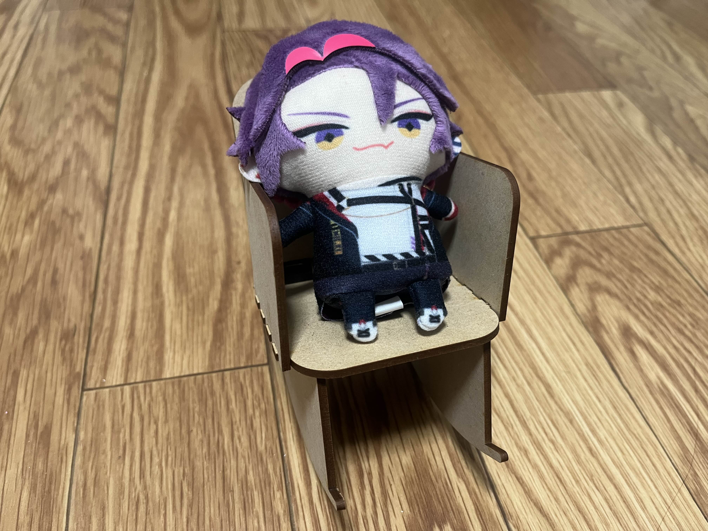

手書き構想スケッチ

作ろうと思ったきっかけ
心を動かす作品は何だろうかと考えたときに自分の欲しいものが心を動かすのではないかと考えたからです。
完成した作品 ぬいぐるみを乗せてみた


設計ファイル
dxfファイル
作品の説明
自分が欲しいと感じたぬいぐるみサイズの椅子をつくりました。こだわった点は、座面と背もたれを折り曲げるためにLiving Hinges
を使ったことです。また、肘置きと座面の接合部ははめ込みで作り安定感が出るようにしました。そして人の心というより自分の心を
動かすに近いですが、普通の椅子にするのは面白くないと思い、思い入れのある私の祖父がよく使っていたゆりかごの足になっている
椅子にしました。他の人もどこか懐かしさを感じられるのではないかと思います。
感想
Living Hingesをつくる際、線を細かくしすぎたのでもう少し粗くすればよかったなと感じました。また現物を想像しながら作りまし
たが、Fusionではパーツを別々に書いているだけでした。そのため、加工機で出来上がったパーツを組み立てて現物が出来上がったと
きはさすがに感動しました。
参考にさせていただいた動画